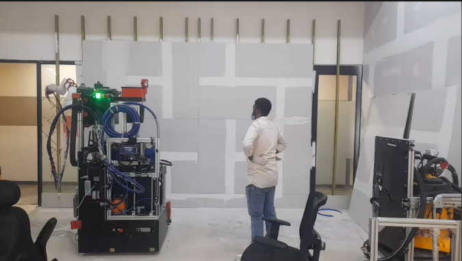
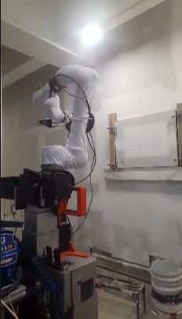
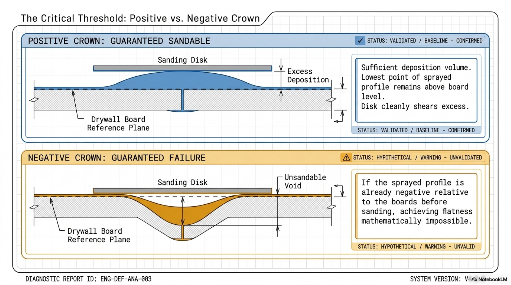
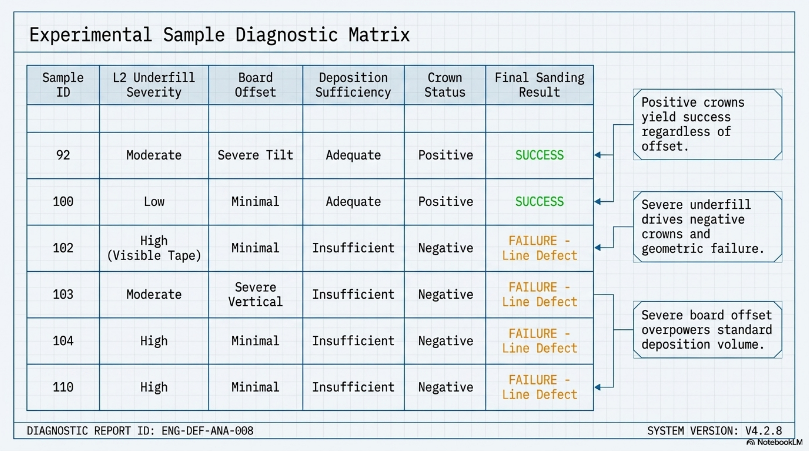
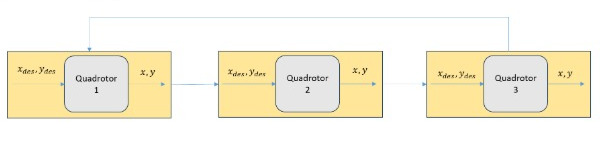

A mobile manipulator performing autonomous drywall finishing needed to match human-grade output quality before the product could be sold to US customers. Spray anomaly rates were high, sanding rework was at 80%, and data collection was entirely manual.
What I Owned
Weekly DevQA -> QA validation - I decided whether the robot was ready for hardware release each week.
Designed and ran full DOE cycles for spray and sanding quality - hypothesis, execution, data analysis, follow-on scoping.
Wrote URScript + RTDE force control pipeline from scratch when the software team was a bottleneck.
Built a 500Hz joint-state logging pipeline with a 10Hz synchronized camera feed, replacing manual data capture.
Built an internal experiment organiser and analysis web app at the company hackathon, adopted by the full team.
Results
Spray quality improved by 65% (ridge-formation anomaly reduction).
Sanding rework reduced from 80% -> 20%.
Data pipeline replaced hours of manual work per experiment.

Autonomous drywall-finishing test area

Hardware experimentation setupExperiment organiser and analysis web app

Crown threshold analysis for sanding outcomes

Experimental diagnostic matrix
Scroll horizontally to view all Origin media →
Indian Institute of Technology Mandi
Research Intern - MiC Lab
May 2025 - July 2025 - Mandi, HP Under Dr. Tushar Jain
Crazyflie 2.1+ROS2PyBulletcflibPythonConsensus Control
The Problem
Build consensus-based time-varying formation tracking on physical Crazyflie drones. No prior implementation existed in the lab. Mid-project, GPS-denied inter-agent localization failed due to Flowdeck optical drift under low light - a problem not in the original scope.
What I Decided
I diagnosed the Flowdeck light dependency, engineered a coordinate conversion layer using known initial positions to synthesize relative pose sharing across agents - no external infrastructure required. I made the call to solve it rather than escalate.
Results
90% formation success rate (18/20 runs) on physical hardware.
First-ever Crazyflie implementation in the lab.

Formation tracking - drone positions overhead400 x 300px
Education
B.Tech - Electrical Engineering
RGUKT Nuzvid 2022 - 2026
GPA 8.27 / 10
Coursework Control Systems - Embedded Systems - Signals & Systems - Digital Electronics - AI/ML - OOP with C++